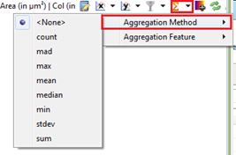
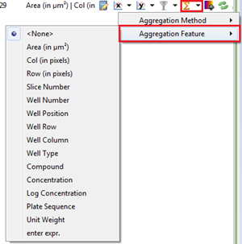
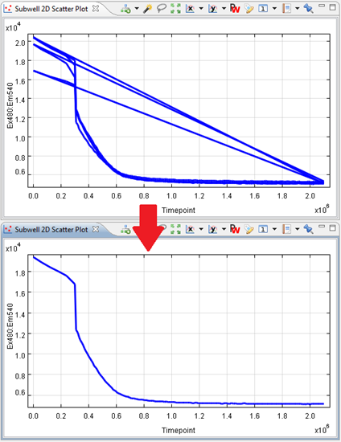

The aggregation method allows you to aggregate multiple data points into a single data point on the chart.
For example, if you have multiple signal measurements per timepoint, you can choose to plot a single, average signal per timepoint.

The aggregation feature allows you to select the feature where aggregation should be grouped by. In the example above, the aggregation feature would be timepoint.

For example, if the kinetics of a compound have been measured several times, and you have plotted them individually as lines on a 2D scatter plot, this will cause unsightly lines to be drawn from the end of one curve to the start of the next one. To view the mean curve of these lines, you can use the aggregation method "mean" and the feature "timepoint".
